import os
import numpy as np
import pandas as pd
import matplotlib.pyplot as plt
import seaborn as sns
import scipy
from sklearn.preprocessing import StandardScaler
from scipy.cluster.hierarchy import dendrogram, linkage
from sklearn.cluster import KMeans
pd.set_option('display.max_columns', None)
sns.set()Market Segmentation - PCA & K-Means Clustering
Import Libraries
Import Data
df_customers = pd.read_csv('customers.csv')
df_customers| ID | Sex | Marital status | Age | Education | Income | Occupation | Settlement size | |
|---|---|---|---|---|---|---|---|---|
| 0 | 100000001 | 0 | 0 | 67 | 2 | 124670 | 1 | 2 |
| 1 | 100000002 | 1 | 1 | 22 | 1 | 150773 | 1 | 2 |
| 2 | 100000003 | 0 | 0 | 49 | 1 | 89210 | 0 | 0 |
| 3 | 100000004 | 0 | 0 | 45 | 1 | 171565 | 1 | 1 |
| 4 | 100000005 | 0 | 0 | 53 | 1 | 149031 | 1 | 1 |
| ... | ... | ... | ... | ... | ... | ... | ... | ... |
| 1995 | 100001996 | 1 | 0 | 47 | 1 | 123525 | 0 | 0 |
| 1996 | 100001997 | 1 | 1 | 27 | 1 | 117744 | 1 | 0 |
| 1997 | 100001998 | 0 | 0 | 31 | 0 | 86400 | 0 | 0 |
| 1998 | 100001999 | 1 | 1 | 24 | 1 | 97968 | 0 | 0 |
| 1999 | 100002000 | 0 | 0 | 25 | 0 | 68416 | 0 | 0 |
2000 rows × 8 columns
Descriptive Statistics
df_customers.describe()| ID | Sex | Marital status | Age | Education | Income | Occupation | Settlement size | |
|---|---|---|---|---|---|---|---|---|
| count | 2.000000e+03 | 2000.000000 | 2000.000000 | 2000.000000 | 2000.00000 | 2000.000000 | 2000.000000 | 2000.000000 |
| mean | 1.000010e+08 | 0.457000 | 0.496500 | 35.909000 | 1.03800 | 120954.419000 | 0.810500 | 0.739000 |
| std | 5.774946e+02 | 0.498272 | 0.500113 | 11.719402 | 0.59978 | 38108.824679 | 0.638587 | 0.812533 |
| min | 1.000000e+08 | 0.000000 | 0.000000 | 18.000000 | 0.00000 | 35832.000000 | 0.000000 | 0.000000 |
| 25% | 1.000005e+08 | 0.000000 | 0.000000 | 27.000000 | 1.00000 | 97663.250000 | 0.000000 | 0.000000 |
| 50% | 1.000010e+08 | 0.000000 | 0.000000 | 33.000000 | 1.00000 | 115548.500000 | 1.000000 | 1.000000 |
| 75% | 1.000015e+08 | 1.000000 | 1.000000 | 42.000000 | 1.00000 | 138072.250000 | 1.000000 | 1.000000 |
| max | 1.000020e+08 | 1.000000 | 1.000000 | 76.000000 | 3.00000 | 309364.000000 | 2.000000 | 2.000000 |
Variable correlation
df_customers.corr()| ID | Sex | Marital status | Age | Education | Income | Occupation | Settlement size | |
|---|---|---|---|---|---|---|---|---|
| ID | 1.000000 | 0.328262 | 0.074403 | -0.085246 | 0.012543 | -0.303217 | -0.291958 | -0.378445 |
| Sex | 0.328262 | 1.000000 | 0.566511 | -0.182885 | 0.244838 | -0.195146 | -0.202491 | -0.300803 |
| Marital status | 0.074403 | 0.566511 | 1.000000 | -0.213178 | 0.374017 | -0.073528 | -0.029490 | -0.097041 |
| Age | -0.085246 | -0.182885 | -0.213178 | 1.000000 | 0.654605 | 0.340610 | 0.108388 | 0.119751 |
| Education | 0.012543 | 0.244838 | 0.374017 | 0.654605 | 1.000000 | 0.233459 | 0.064524 | 0.034732 |
| Income | -0.303217 | -0.195146 | -0.073528 | 0.340610 | 0.233459 | 1.000000 | 0.680357 | 0.490881 |
| Occupation | -0.291958 | -0.202491 | -0.029490 | 0.108388 | 0.064524 | 0.680357 | 1.000000 | 0.571795 |
| Settlement size | -0.378445 | -0.300803 | -0.097041 | 0.119751 | 0.034732 | 0.490881 | 0.571795 | 1.000000 |
Correlation - Heat Map
plt.figure(figsize=(12, 9))
s = sns.heatmap(df_customers.corr(),
annot=True,
cmap='RdBu',
vmin=-1,
vmax=1)
s.set_xticklabels(s.get_xticklabels(), rotation=90)
plt.title('Correlation Matrix')
plt.show()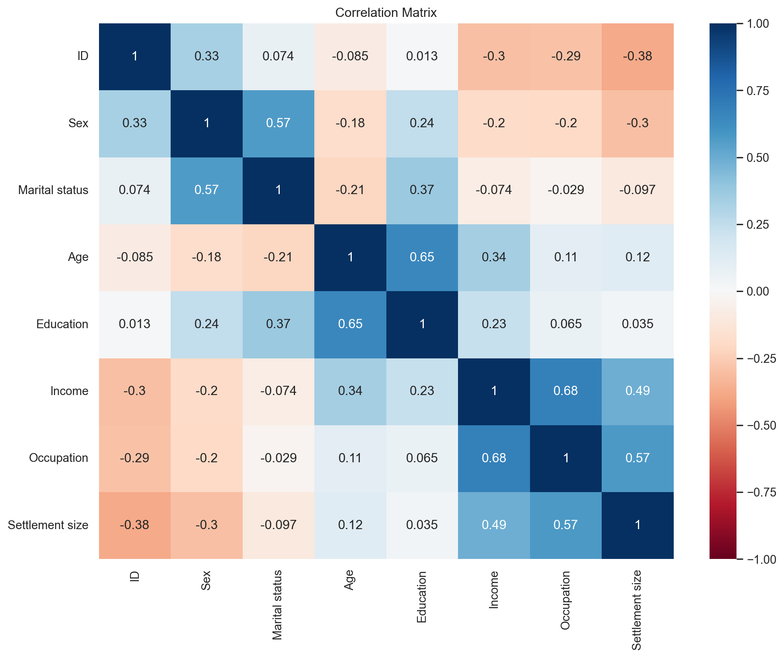
Scatter Plot - Age vs. Income
plt.figure(figsize=(12, 9))
# plt.scatter(df_customers.iloc[:, 2], df_customers.iloc[:, 4])
plt.scatter(df_customers['Age'], df_customers['Income'])
plt.xlabel('Age')
plt.ylabel('Income')Text(0, 0.5, 'Income')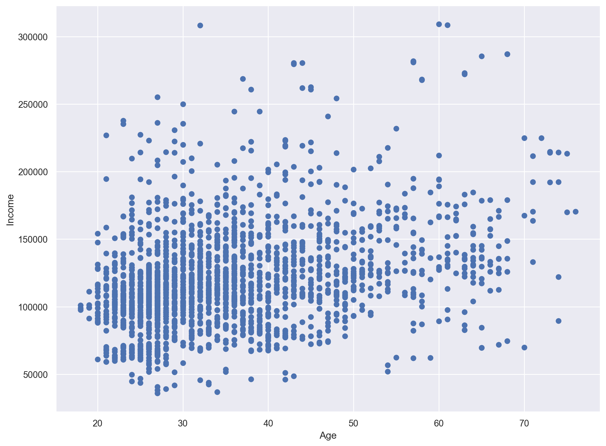
Standardize the DataFrame
scaler = StandardScaler()
customers_std = scaler.fit_transform(df_customers)
customers_stdarray([[-1.731185 , -0.91739884, -0.99302433, ..., 0.09752361,
0.29682303, 1.552326 ],
[-1.72945295, 1.09003844, 1.00702467, ..., 0.78265438,
0.29682303, 1.552326 ],
[-1.7277209 , -0.91739884, -0.99302433, ..., -0.83320224,
-1.26952539, -0.90972951],
...,
[ 1.7277209 , -0.91739884, -0.99302433, ..., -0.90695688,
-1.26952539, -0.90972951],
[ 1.72945295, 1.09003844, 1.00702467, ..., -0.60332923,
-1.26952539, -0.90972951],
[ 1.731185 , -0.91739884, -0.99302433, ..., -1.3789866 ,
-1.26952539, -0.90972951]])Hierarchical Clustering
h_cluster = linkage(customers_std, method='ward')
plt.figure(figsize=(12, 9))
plt.xlabel('Observations')
plt.ylabel('Distance')
dendrogram(h_cluster,
show_leaf_counts=False,
no_labels=True)
plt.show()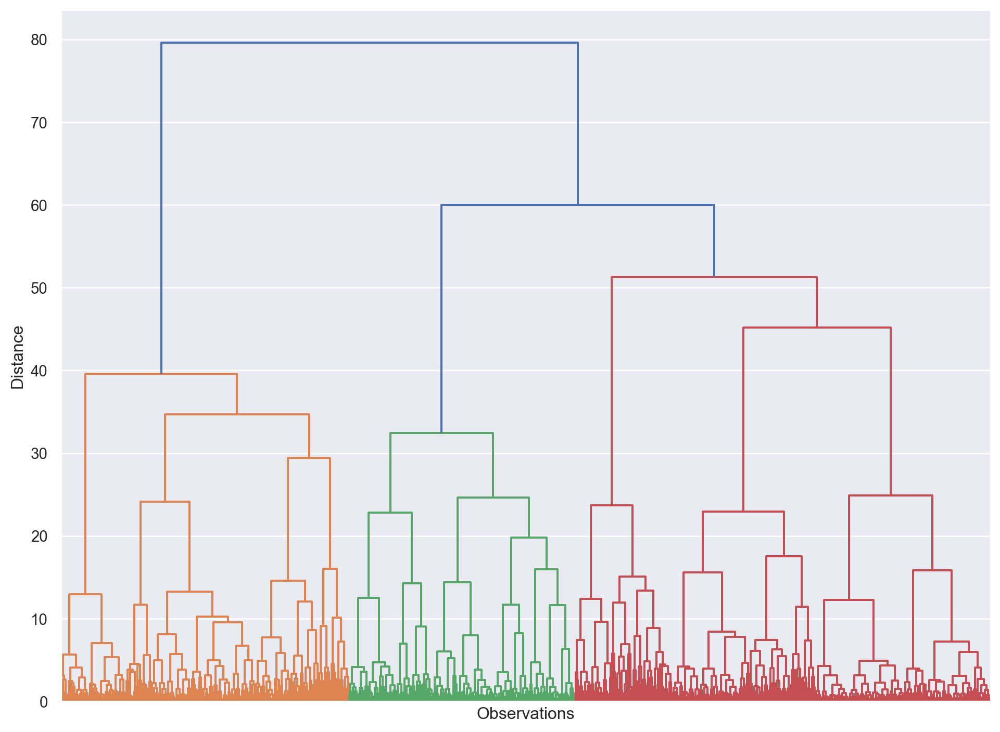
K-Means Clustering
results = {}
for i in range (1, 11):
kmeans = KMeans(n_clusters=i, init='k-means++', random_state=42)
kmeans.fit(customers_std)
results[i] = kmeans.inertia_
plt.figure(figsize=(12, 9))
plt.plot(results.keys(), results.values(), marker='o', linestyle='--')
plt.plot([0.7, 3.2], [12000, 7000], color='#FF8400')
plt.plot([4.5, 9], [5700, 4000], color='#FF8400')
plt.xlabel('Number of Clusters')
plt.ylabel('Sum of squared distance')
plt.show()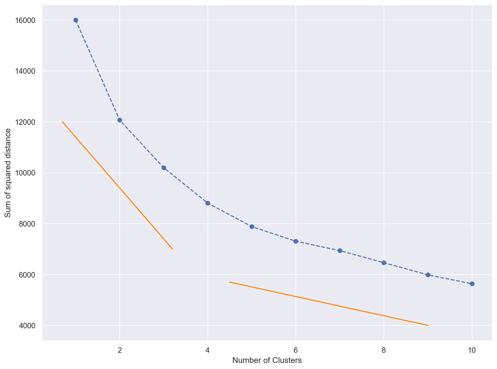
K-Means Clustering - 4 Clusters
kmeans = KMeans(n_clusters=4, init='k-means++', random_state=42)
kmeans.fit(customers_std)
df_customers_kmeans = df_customers.copy()
df_customers_kmeans['Segment'] = kmeans.labels_
df_customers_kmeans| ID | Sex | Marital status | Age | Education | Income | Occupation | Settlement size | Segment | |
|---|---|---|---|---|---|---|---|---|---|
| 0 | 100000001 | 0 | 0 | 67 | 2 | 124670 | 1 | 2 | 2 |
| 1 | 100000002 | 1 | 1 | 22 | 1 | 150773 | 1 | 2 | 1 |
| 2 | 100000003 | 0 | 0 | 49 | 1 | 89210 | 0 | 0 | 3 |
| 3 | 100000004 | 0 | 0 | 45 | 1 | 171565 | 1 | 1 | 0 |
| 4 | 100000005 | 0 | 0 | 53 | 1 | 149031 | 1 | 1 | 0 |
| ... | ... | ... | ... | ... | ... | ... | ... | ... | ... |
| 1995 | 100001996 | 1 | 0 | 47 | 1 | 123525 | 0 | 0 | 3 |
| 1996 | 100001997 | 1 | 1 | 27 | 1 | 117744 | 1 | 0 | 1 |
| 1997 | 100001998 | 0 | 0 | 31 | 0 | 86400 | 0 | 0 | 3 |
| 1998 | 100001999 | 1 | 1 | 24 | 1 | 97968 | 0 | 0 | 1 |
| 1999 | 100002000 | 0 | 0 | 25 | 0 | 68416 | 0 | 0 | 3 |
2000 rows × 9 columns
Characteristics of the people in each cluster
df_customers_analysis = df_customers_kmeans.groupby('Segment').mean().round(3)
df_customers_analysis| ID | Sex | Marital status | Age | Education | Income | Occupation | Settlement size | |
|---|---|---|---|---|---|---|---|---|
| Segment | ||||||||
| 0 | 1.000007e+08 | 0.032 | 0.180 | 35.637 | 0.738 | 140135.807 | 1.251 | 1.389 |
| 1 | 1.000011e+08 | 0.876 | 0.999 | 29.003 | 1.068 | 105597.536 | 0.630 | 0.418 |
| 2 | 1.000009e+08 | 0.483 | 0.680 | 55.881 | 2.130 | 155931.141 | 1.093 | 1.078 |
| 3 | 1.000014e+08 | 0.403 | 0.043 | 34.690 | 0.742 | 94407.322 | 0.255 | 0.060 |
df_customers_analysis['Count'] = df_customers_kmeans[['Segment', 'Sex']].groupby('Segment').count()
df_customers_analysis['%'] = df_customers_analysis['Count'] / df_customers_analysis['Count'].sum()
df_customers_analysis.rename(index={
0: 'well-off',
1: 'fewer-opportunities',
2: 'standard',
3: 'career-focused'
}, inplace=True)
df_customers_analysis| ID | Sex | Marital status | Age | Education | Income | Occupation | Settlement size | Count | % | |
|---|---|---|---|---|---|---|---|---|---|---|
| Segment | ||||||||||
| well-off | 1.000007e+08 | 0.032 | 0.180 | 35.637 | 0.738 | 140135.807 | 1.251 | 1.389 | 633 | 0.3165 |
| fewer-opportunities | 1.000011e+08 | 0.876 | 0.999 | 29.003 | 1.068 | 105597.536 | 0.630 | 0.418 | 679 | 0.3395 |
| standard | 1.000009e+08 | 0.483 | 0.680 | 55.881 | 2.130 | 155931.141 | 1.093 | 1.078 | 269 | 0.1345 |
| career-focused | 1.000014e+08 | 0.403 | 0.043 | 34.690 | 0.742 | 94407.322 | 0.255 | 0.060 | 419 | 0.2095 |
plt.figure(figsize=(8, 6))
s = sns.barplot(data=df_customers_analysis, x=df_customers_analysis.index, y='Count', palette=['g','c','r','m'])
plt.xlabel('Segment')
plt.ylabel('Population')
plt.show()/var/folders/s3/h2qfnwzs63b1k1xft79tdnfw0000gn/T/ipykernel_58584/843998559.py:2: FutureWarning:
Passing `palette` without assigning `hue` is deprecated and will be removed in v0.14.0. Assign the `x` variable to `hue` and set `legend=False` for the same effect.
s = sns.barplot(data=df_customers_analysis, x=df_customers_analysis.index, y='Count', palette=['g','c','r','m'])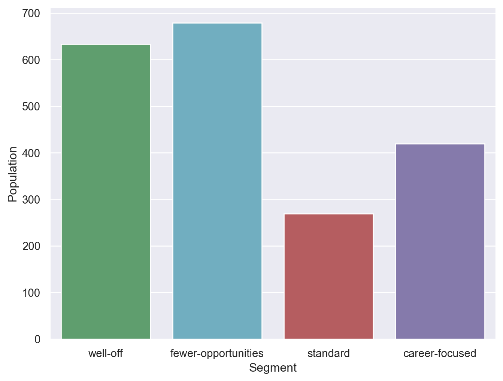
Assign Meaningful Labels to the segments
df_customers_kmeans['Segment'] = df_customers_kmeans['Segment'].map({
0: 'well-off',
1: 'fewer-opportunities',
2: 'standard',
3: 'career-focused'
})
df_customers_kmeans| ID | Sex | Marital status | Age | Education | Income | Occupation | Settlement size | Segment | |
|---|---|---|---|---|---|---|---|---|---|
| 0 | 100000001 | 0 | 0 | 67 | 2 | 124670 | 1 | 2 | standard |
| 1 | 100000002 | 1 | 1 | 22 | 1 | 150773 | 1 | 2 | fewer-opportunities |
| 2 | 100000003 | 0 | 0 | 49 | 1 | 89210 | 0 | 0 | career-focused |
| 3 | 100000004 | 0 | 0 | 45 | 1 | 171565 | 1 | 1 | well-off |
| 4 | 100000005 | 0 | 0 | 53 | 1 | 149031 | 1 | 1 | well-off |
| ... | ... | ... | ... | ... | ... | ... | ... | ... | ... |
| 1995 | 100001996 | 1 | 0 | 47 | 1 | 123525 | 0 | 0 | career-focused |
| 1996 | 100001997 | 1 | 1 | 27 | 1 | 117744 | 1 | 0 | fewer-opportunities |
| 1997 | 100001998 | 0 | 0 | 31 | 0 | 86400 | 0 | 0 | career-focused |
| 1998 | 100001999 | 1 | 1 | 24 | 1 | 97968 | 0 | 0 | fewer-opportunities |
| 1999 | 100002000 | 0 | 0 | 25 | 0 | 68416 | 0 | 0 | career-focused |
2000 rows × 9 columns
Visualize the segmented customers
colors = ['g','r','c','m']
sns.set_palette(sns.color_palette("pastel"))
plt.figure(figsize=(12, 8))
sns.scatterplot(
x=df_customers_kmeans['Age'],
y=df_customers_kmeans['Income'],
hue=df_customers_kmeans['Segment'],
palette=colors
)
plt.scatter(62, 160000 , s=60000, facecolors='none', edgecolors='#FF8400' )
plt.title('Age vs Income in each segment')
plt.show()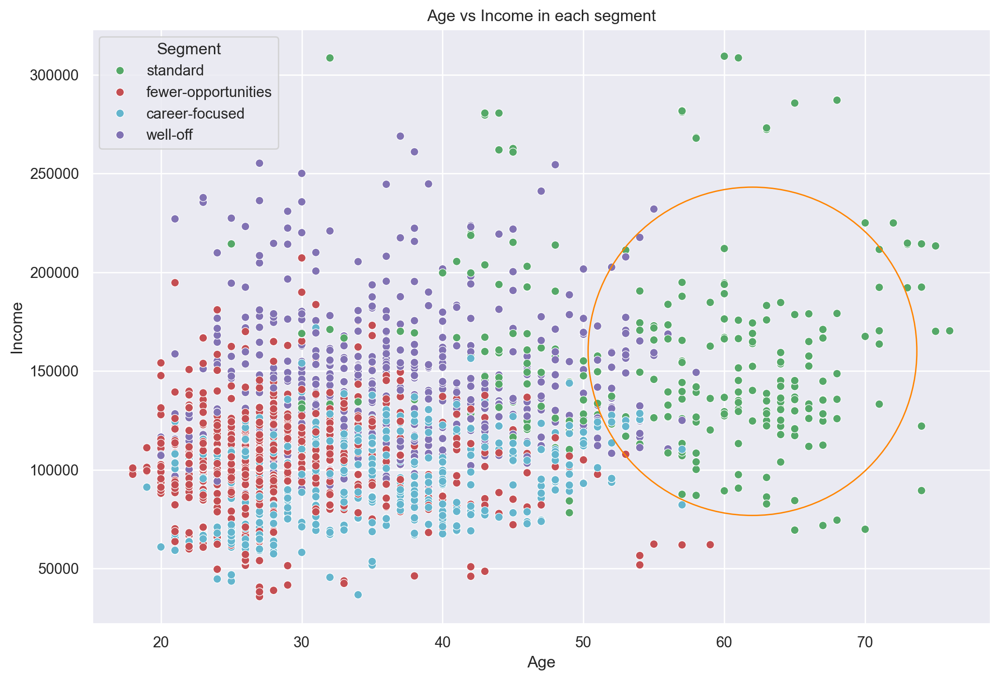
Education vs. Income
plt.figure(figsize=(16, 8))
sns.violinplot(
x=df_customers_kmeans['Education'],
y=df_customers_kmeans['Income'],
hue=df_customers_kmeans['Segment'],
palette=['g','r','c','m']
)
plt.title('Education vs Income in each segment')
plt.show()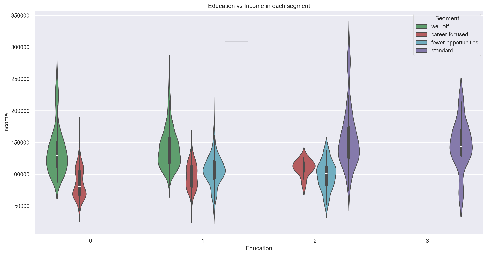
Improve K-Means with PCA
from sklearn.decomposition import PCA
pca = PCA()
pca.fit(customers_std)
pca.explained_variance_ratio_array([0.34103573, 0.23178599, 0.16650585, 0.09955452, 0.06169548,
0.04785186, 0.03407515, 0.01749541])Plot the cumulative sum of variability
plt.figure(figsize=(12, 8))
plt.plot(range(0, 8), pca.explained_variance_ratio_.cumsum(), marker='o', linestyle='--')
plt.xlabel('Number of Components')
plt.ylabel('Cumulative Explained Variance')Text(0, 0.5, 'Cumulative Explained Variance')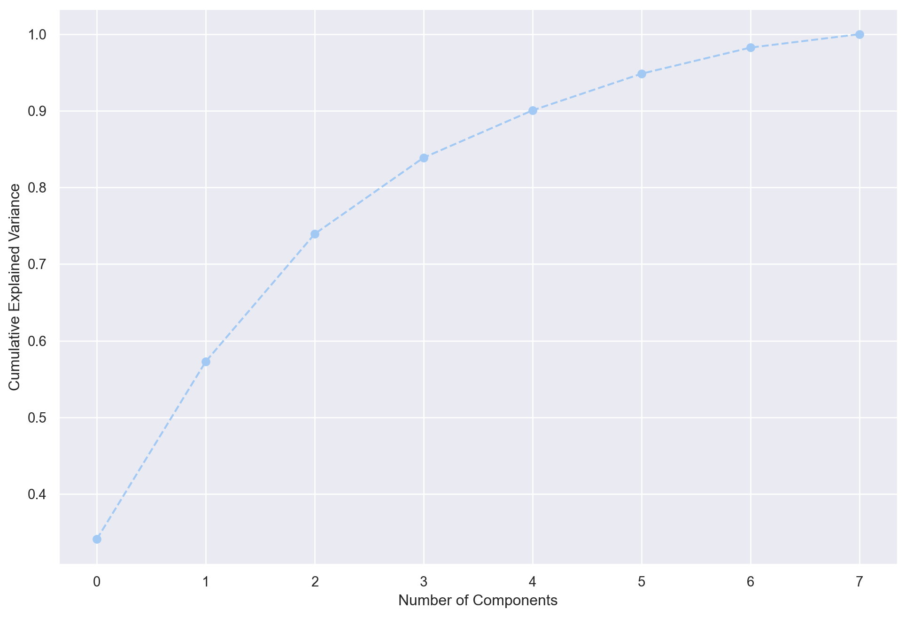
Pick 3 Components from the PCA model
pca = PCA(n_components=3)
pca.fit(customers_std)
df_pca_components = pd.DataFrame(
data=pca.components_.round(4),
columns=df_customers.columns.values,
index=['component 1', 'component 2', 'component 3'])
df_pca_components| ID | Sex | Marital status | Age | Education | Income | Occupation | Settlement size | |
|---|---|---|---|---|---|---|---|---|
| component 1 | -0.3454 | -0.3286 | -0.1873 | 0.2703 | 0.1045 | 0.4838 | 0.4617 | 0.4543 |
| component 2 | 0.1072 | 0.4213 | 0.4721 | 0.3553 | 0.6528 | 0.1763 | 0.0614 | -0.0308 |
| component 3 | 0.1435 | -0.3180 | -0.4854 | 0.6134 | 0.2523 | -0.1236 | -0.3446 | -0.2621 |
Correlation Matrix of the 3 Components
s = sns.heatmap(
df_pca_components,
vmin=-1,
vmax=1,
cmap='RdBu',
annot=True
)
plt.title('Correlation Matrix')
plt.show()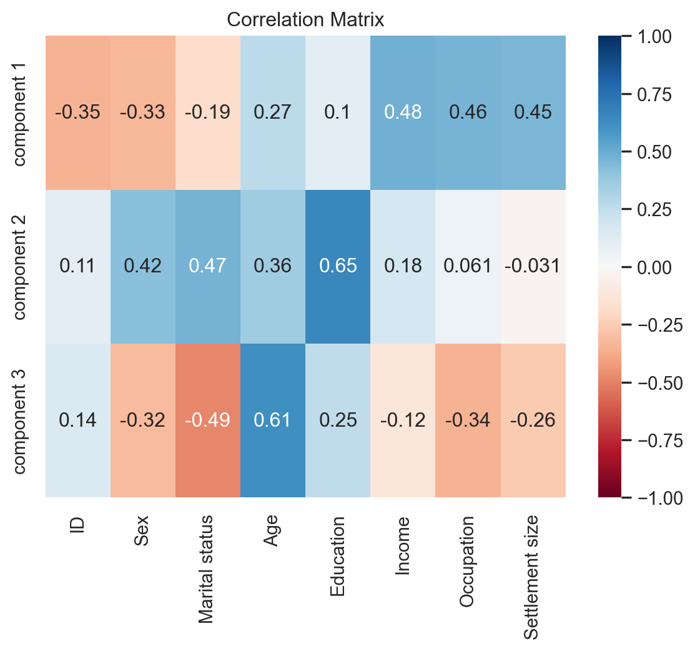
Implementing K-Means Clustering
pca_scores = pca.transform(customers_std)
results = {}
for i in range(1, 11):
kmeans_pca = KMeans(n_clusters=i, init='k-means++', random_state=42)
kmeans_pca.fit(pca_scores) # pca_scores are standarzied by default
results[i] = kmeans_pca.inertia_plt.figure(figsize=(12, 8))
plt.plot(results.keys(), results.values(), marker='o', linestyle='--')
plt.xlabel('Number of Clusters')
plt.ylabel('Sum of squared distance')
plt.show()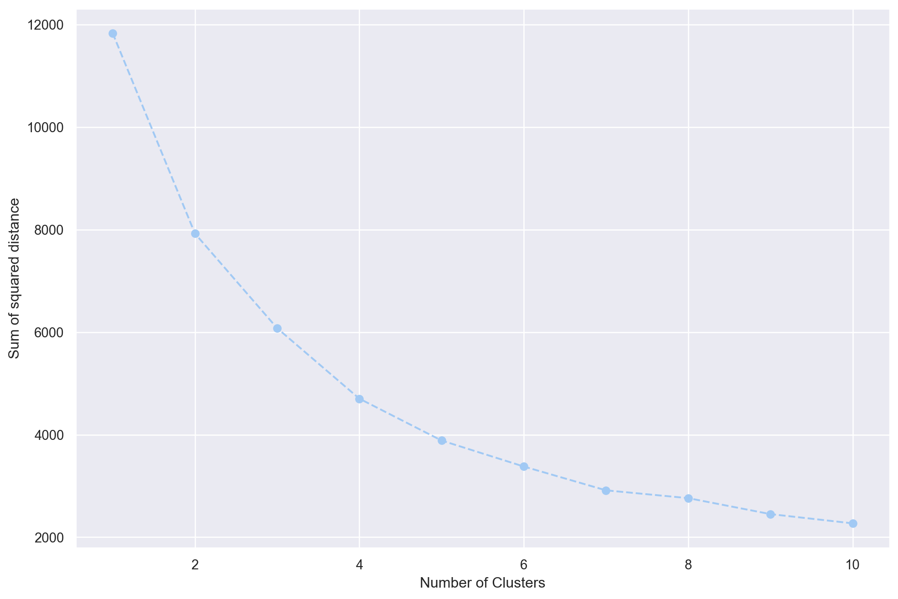
Implementing K-Means Clustering w/ 4 Clusters
kmeans_pca = KMeans(n_clusters=4, init='k-means++', random_state=42)
kmeans_pca.fit(pca_scores)KMeans(n_clusters=4, random_state=42)In a Jupyter environment, please rerun this cell to show the HTML representation or trust the notebook.
On GitHub, the HTML representation is unable to render, please try loading this page with nbviewer.org.
KMeans(n_clusters=4, random_state=42)
df_segm_pca = pd.concat([df_customers.reset_index(drop=True), pd.DataFrame(pca_scores)], axis=1)
df_segm_pca.columns.values[-3:] = ['component 1', 'component 2', 'component 3']
df_segm_pca['K-means PCA'] = kmeans_pca.labels_
df_segm_pca.to_csv("customer_segment_pca.csv", encoding='utf-8', index=False)
df_segm_pca| ID | Sex | Marital status | Age | Education | Income | Occupation | Settlement size | component 1 | component 2 | component 3 | K-means PCA | |
|---|---|---|---|---|---|---|---|---|---|---|---|---|
| 0 | 100000001 | 0 | 0 | 67 | 2 | 124670 | 1 | 2 | 2.859782 | 0.936676 | 2.036586 | 2 |
| 1 | 100000002 | 1 | 1 | 22 | 1 | 150773 | 1 | 2 | 0.944130 | 0.394492 | -2.433785 | 0 |
| 2 | 100000003 | 0 | 0 | 49 | 1 | 89210 | 0 | 0 | -0.023032 | -0.881797 | 1.974083 | 3 |
| 3 | 100000004 | 0 | 0 | 45 | 1 | 171565 | 1 | 1 | 2.212422 | -0.563616 | 0.635332 | 0 |
| 4 | 100000005 | 0 | 0 | 53 | 1 | 149031 | 1 | 1 | 2.110202 | -0.425124 | 1.127543 | 0 |
| ... | ... | ... | ... | ... | ... | ... | ... | ... | ... | ... | ... | ... |
| 1995 | 100001996 | 1 | 0 | 47 | 1 | 123525 | 0 | 0 | -1.485348 | 0.432286 | 1.615196 | 3 |
| 1996 | 100001997 | 1 | 1 | 27 | 1 | 117744 | 1 | 0 | -1.672129 | 0.839600 | -0.923547 | 1 |
| 1997 | 100001998 | 0 | 0 | 31 | 0 | 86400 | 0 | 0 | -1.841798 | -2.158681 | 1.116012 | 3 |
| 1998 | 100001999 | 1 | 1 | 24 | 1 | 97968 | 0 | 0 | -2.716832 | 0.561390 | -0.476253 | 1 |
| 1999 | 100002000 | 0 | 0 | 25 | 0 | 68416 | 0 | 0 | -2.209795 | -2.423450 | 0.860709 | 3 |
2000 rows × 12 columns
Analyze Segmentation Results
df_segm_pca_analysis = df_segm_pca.groupby(['K-means PCA']).mean().round(4)
df_segm_pca_analysis| ID | Sex | Marital status | Age | Education | Income | Occupation | Settlement size | component 1 | component 2 | component 3 | |
|---|---|---|---|---|---|---|---|---|---|---|---|
| K-means PCA | |||||||||||
| 0 | 1.000007e+08 | 0.0347 | 0.1924 | 35.4479 | 0.7382 | 140183.3155 | 1.2539 | 1.3912 | 1.4667 | -0.9422 | -0.1839 |
| 1 | 1.000012e+08 | 0.9190 | 0.9670 | 28.9580 | 1.0645 | 106617.4678 | 0.6597 | 0.4273 | -1.2052 | 0.6160 | -0.8333 |
| 2 | 1.000009e+08 | 0.4925 | 0.6842 | 55.8421 | 2.1278 | 157389.3872 | 1.1128 | 1.0977 | 1.5153 | 2.1581 | 0.8680 |
| 3 | 1.000013e+08 | 0.3418 | 0.1016 | 35.0462 | 0.7667 | 92501.5889 | 0.2079 | 0.0439 | -1.2220 | -0.8951 | 1.0196 |
- Segment 0: low career and experience values with high education and lifestyle values.
- Label: Standard
- Segment 1: high career but low education, lifestyle and experience
- Label: Career focused
- Segment 2: low career, education and lifestyle, but high life experience
- Label: Fewer opportunities
- Segment 3: high career, education and lifestyle as well as high life experience
- Label: Well-off
df_segm_pca_analysis['Count'] = df_segm_pca[['K-means PCA', 'Sex']].groupby(['K-means PCA']).count()
df_segm_pca_analysis['%'] = df_segm_pca_analysis['Count'] / df_segm_pca_analysis['Count'].sum()
df_segm_pca_analysis.rename(index={
0: 'standard',
1: 'career-focused',
2: 'fewer-opportunities',
3: 'well-off'
}, inplace=True)
df_segm_pca_analysis| ID | Sex | Marital status | Age | Education | Income | Occupation | Settlement size | component 1 | component 2 | component 3 | Count | % | |
|---|---|---|---|---|---|---|---|---|---|---|---|---|---|
| K-means PCA | |||||||||||||
| standard | 1.000007e+08 | 0.0347 | 0.1924 | 35.4479 | 0.7382 | 140183.3155 | 1.2539 | 1.3912 | 1.4667 | -0.9422 | -0.1839 | 634 | 0.3170 |
| career-focused | 1.000012e+08 | 0.9190 | 0.9670 | 28.9580 | 1.0645 | 106617.4678 | 0.6597 | 0.4273 | -1.2052 | 0.6160 | -0.8333 | 667 | 0.3335 |
| fewer-opportunities | 1.000009e+08 | 0.4925 | 0.6842 | 55.8421 | 2.1278 | 157389.3872 | 1.1128 | 1.0977 | 1.5153 | 2.1581 | 0.8680 | 266 | 0.1330 |
| well-off | 1.000013e+08 | 0.3418 | 0.1016 | 35.0462 | 0.7667 | 92501.5889 | 0.2079 | 0.0439 | -1.2220 | -0.8951 | 1.0196 | 433 | 0.2165 |
Number of Customers per Segment
plt.figure(figsize=(8, 6))
s = sns.barplot(data=df_segm_pca_analysis, x=df_segm_pca_analysis.index, y='Count', palette=['g','c','r','m'])
plt.xlabel('Segment')
plt.ylabel('Population')
plt.show()/var/folders/s3/h2qfnwzs63b1k1xft79tdnfw0000gn/T/ipykernel_58584/2239997931.py:2: FutureWarning:
Passing `palette` without assigning `hue` is deprecated and will be removed in v0.14.0. Assign the `x` variable to `hue` and set `legend=False` for the same effect.
s = sns.barplot(data=df_segm_pca_analysis, x=df_segm_pca_analysis.index, y='Count', palette=['g','c','r','m'])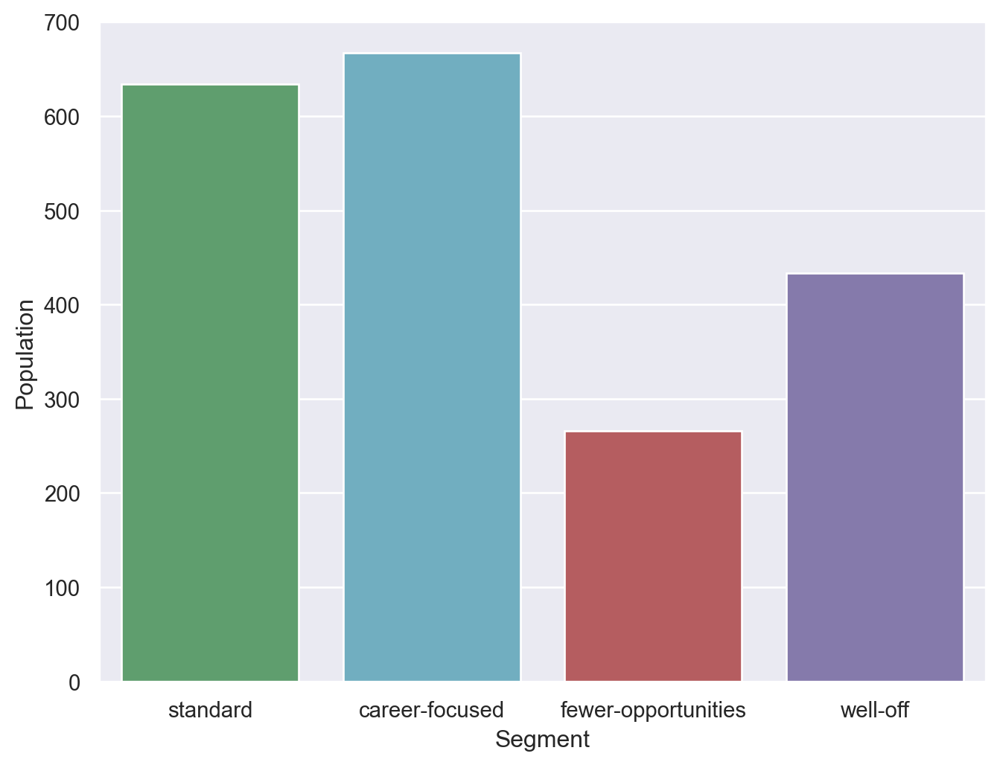
Add segment labels to original dataset
df_segm_pca['Segment'] = df_segm_pca['K-means PCA'].map({
0: 'standard',
1: 'career-focused',
2: 'fewer-opportunities',
3: 'well-off'
})
df_segm_pca| ID | Sex | Marital status | Age | Education | Income | Occupation | Settlement size | component 1 | component 2 | component 3 | K-means PCA | Segment | |
|---|---|---|---|---|---|---|---|---|---|---|---|---|---|
| 0 | 100000001 | 0 | 0 | 67 | 2 | 124670 | 1 | 2 | 2.859782 | 0.936676 | 2.036586 | 2 | fewer-opportunities |
| 1 | 100000002 | 1 | 1 | 22 | 1 | 150773 | 1 | 2 | 0.944130 | 0.394492 | -2.433785 | 0 | standard |
| 2 | 100000003 | 0 | 0 | 49 | 1 | 89210 | 0 | 0 | -0.023032 | -0.881797 | 1.974083 | 3 | well-off |
| 3 | 100000004 | 0 | 0 | 45 | 1 | 171565 | 1 | 1 | 2.212422 | -0.563616 | 0.635332 | 0 | standard |
| 4 | 100000005 | 0 | 0 | 53 | 1 | 149031 | 1 | 1 | 2.110202 | -0.425124 | 1.127543 | 0 | standard |
| ... | ... | ... | ... | ... | ... | ... | ... | ... | ... | ... | ... | ... | ... |
| 1995 | 100001996 | 1 | 0 | 47 | 1 | 123525 | 0 | 0 | -1.485348 | 0.432286 | 1.615196 | 3 | well-off |
| 1996 | 100001997 | 1 | 1 | 27 | 1 | 117744 | 1 | 0 | -1.672129 | 0.839600 | -0.923547 | 1 | career-focused |
| 1997 | 100001998 | 0 | 0 | 31 | 0 | 86400 | 0 | 0 | -1.841798 | -2.158681 | 1.116012 | 3 | well-off |
| 1998 | 100001999 | 1 | 1 | 24 | 1 | 97968 | 0 | 0 | -2.716832 | 0.561390 | -0.476253 | 1 | career-focused |
| 1999 | 100002000 | 0 | 0 | 25 | 0 | 68416 | 0 | 0 | -2.209795 | -2.423450 | 0.860709 | 3 | well-off |
2000 rows × 13 columns
Visualize segments with respect to first two components
plt.figure(figsize=(10, 8))
sns.scatterplot(
x=df_segm_pca['component 2'],
y=df_segm_pca['component 1'],
hue=df_segm_pca['Segment'],
palette=['g','r','c','m']
)
plt.scatter(2.35, 2 , s=60000, facecolors='none', edgecolors='g' )
plt.scatter(-1.2, 2 , s=60000, facecolors='none', edgecolors='y' )
plt.scatter(-1, -1 , s=30000, facecolors='none', edgecolors='b' )
plt.scatter(1.2, -1 , s=40000, facecolors='none', edgecolors='r' )
plt.title('Component 1 vs Component 2')
plt.show()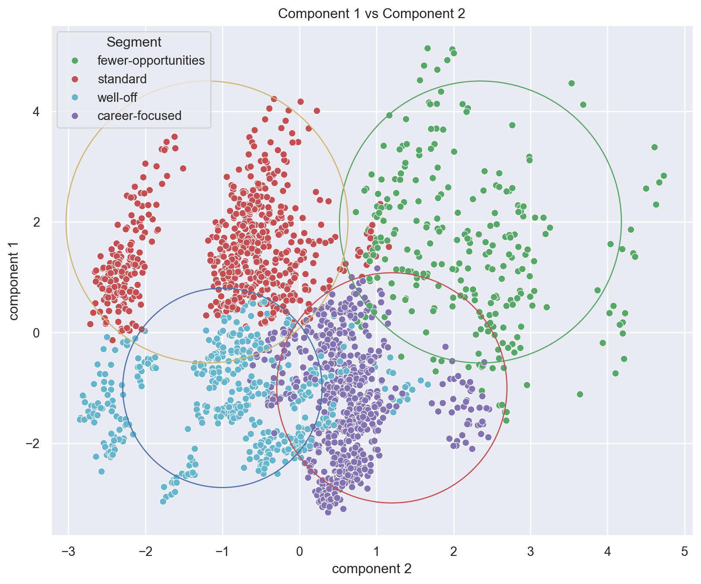